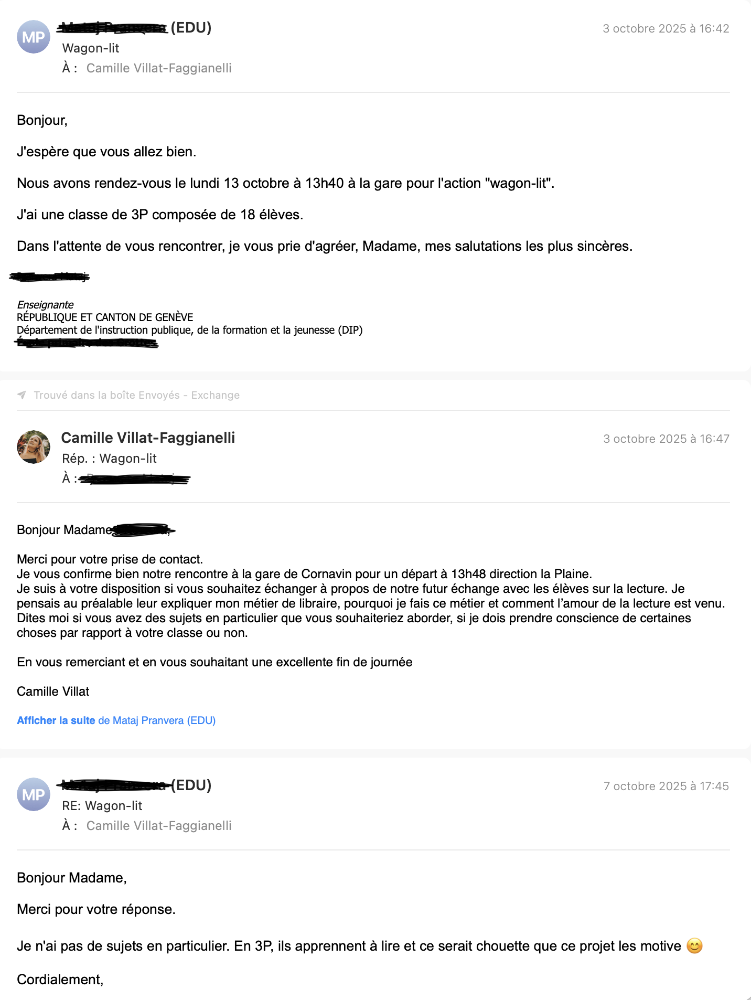

Projet Les Livrées / Wagon-lit : médiation autour de la lecture
Intervention auprès d'élèves de cycles primaires et d'adolescents allophones autour de la lecture, du texte et de la découverte du livre, dans le cadre d'une action de médiation culturelle.
- Emplacement
- Festival Les Livrées, Genève (Lémanique)
- Date
- Septembre – octobre 2025
- Rôle
- Intervenante culturelle
- Type de projet
- Médiation culturelle / lecture / accompagnement des publics
- Contenu
- Adaptation à des publics variés, transmission, médiation hors les murs
Une prise de parole adaptée à deux publics très différents
Le dispositif Wagon-lit supposait d'intervenir auprès de classes primaires d'un côté, et d'adolescents allophones de niveau A1-A2 de l'autre. J'ai conçu deux déroulés distincts, adaptés à l'âge, au niveau de lecture et aux références culturelles, et pris contact en amont avec les enseignant·es pour ajuster chaque rencontre.
Cette préparation ne consiste pas seulement à modifier quelques exemples ou supports : elle suppose de repenser la manière de parler du livre, du texte et de la lecture selon les publics rencontrés. Pour les plus jeunes, il s'agit de privilégier l'échange, la simplicité et l'entrée sensible dans les œuvres ; pour les adolescent·es allophones, l'attention porte davantage sur l'accessibilité du vocabulaire, la clarté des formulations et la possibilité de créer un espace d'expression malgré les écarts de niveau linguistique.
Valoriser une lecture libre et non hiérarchisée
Albums, BD, mangas, romans : mon intervention défendait une conception inclusive de la lecture, sans opposer les formats. Après le trajet en Wagon-lit, un temps d'échange d'environ 20-25 minutes permettait aux élèves d'évoquer leur rapport au texte, à l'écriture, à la relecture et au plaisir de lire.
Ce temps de médiation me paraît important parce qu'il permet de sortir d'une vision scolaire ou hiérarchisée de la lecture. L'enjeu n'est pas de faire entrer les élèves dans une définition restreinte du « bon lecteur », mais de leur montrer que différents formats peuvent constituer de véritables portes d'entrée dans le texte, l'imaginaire et le plaisir de lire. Cette approche me semble particulièrement féconde dans des contextes où les parcours de lecture sont très variés.
Plus de 2000 élèves et un dispositif structuré
Les Livrées / Wagon-lit était un dispositif de grande ampleur, rassemblant plus de 2000 élèves et de nombreux intervenant·es. Mon intervention s'inscrivait dans une programmation collective structurée : gestion logistique des rendez-vous, trains, horaires et classes attribuées, dans une vraie dynamique de coordination partenariale.
Le fait d'intervenir dans un cadre aussi structuré me montre aussi que la médiation culturelle ne repose pas uniquement sur la qualité d'une intervention individuelle. Elle dépend également d'une organisation collective solide, d'une coordination en amont et d'une articulation claire entre les différents acteurs du projet. Cette dimension me paraît importante, parce qu'elle inscrit la médiation dans une dynamique plus large de partenariat et de circulation des publics.
Attention aux publics fragiles et aux niveaux linguistiques
L'adaptation aux élèves allophones a nécessité un choix spécifique de supports accessibles, une attention à la simplicité du discours et à la dimension visuelle. Cette attention aux publics fragiles est un aspect particulièrement distinctif de l'intervention.
Cette attention aux publics ne relève pas seulement d'un ajustement technique. Elle engage une manière d'entrer en relation, de ne pas présupposer les mêmes repères chez tout le monde et de construire une médiation accessible sans devenir appauvrie. Dans le cas des adolescent·es allophones en particulier, cela suppose de trouver un équilibre entre simplicité, respect du public et capacité à maintenir un véritable échange autour du livre et de la lecture.
Cadre officiel et préparation


Trame d'intervention retravaillée
Ce document reprend le script d'intervention pensé pour les deux publics (primaires / adolescents allophones), avec les adaptations prévues et les temps forts du dispositif.
Retour analytique
Cette expérience m'a appris à penser la médiation dans un cadre plus mobile et plus directement tourné vers les publics. Elle me montre combien la lecture peut devenir un point d'appui pour créer du lien, ouvrir un échange et proposer une entrée dans le livre, même dans des contextes où les repères ou les habitudes de lecture sont très variés. Elle renforce chez moi l'intérêt pour des formes de médiation qui reposent sur l'adaptation, la présence et l'attention concrète portée aux personnes rencontrées.